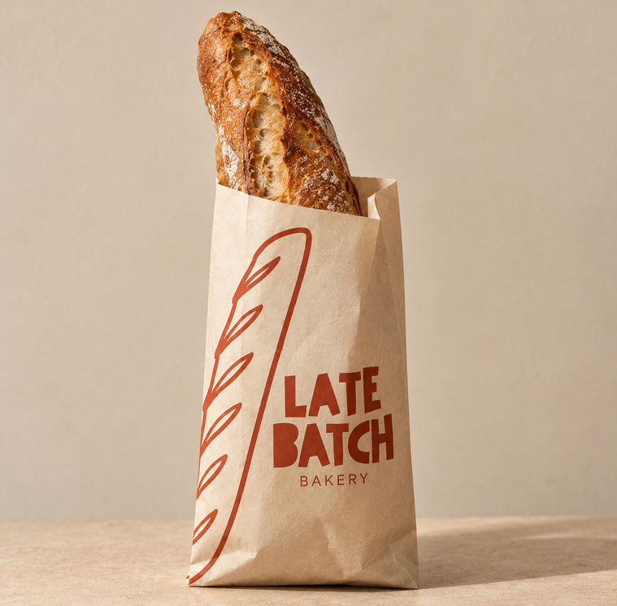

Late Batch Bakery
About us
Late Batch is a bakery of bread, cookies and croissants, baked in the last oven of the day. It is also a made-up one: the bakery, its products and its shop exist only for a class exercise.
Three bags
Every family has its own paper bag. Bread comes in kraft with copper print, cookies in chocolate brown with cream print, and croissants in teal with cream print.



The project
This website was designed by Natalia Martín Macías, a third-year student of TSDMG, for the subject Digital Marketing Strategies.
Designed by
Natalia Martín Macías
Studies
Third year, TSDMG
Subject
Digital Marketing Strategies